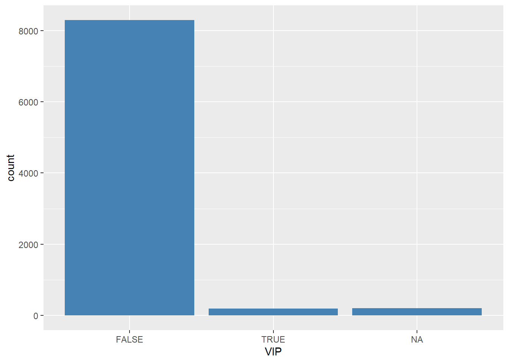

Pré-processamento usando a base de dados Space Titanic
Bem-vindo ao ano de 2912, onde suas habilidades em ciência de dados são necessárias para resolver um mistério cósmico. Recebemos uma transmissão de quatro anos-luz de distância e as coisas não parecem boas.
A espaçonave Titanic foi um transatlântico interestelar lançado há um mês. Com quase 13.000 passageiros a bordo, a embarcação partiu em sua viagem inaugural transportando emigrantes de nosso sistema solar para três exoplanetas recém-habitáveis orbitando estrelas próximas.
Ao contornar Alpha Centauri a caminho de seu primeiro destino - o tórrido 55 Cancri E - a incauta nave espacial Titanic colidiu com uma anomalia do espaço-tempo escondida dentro de uma nuvem de poeira. Infelizmente, ele teve um destino semelhante ao de seu homônimo de 1000 anos antes. Embora a nave tenha permanecido intacta, quase metade dos passageiros foram transportados para uma dimensão alternativa!
Para ajudar as equipes de resgate e recuperar os passageiros perdidos, você é desafiado a prever quais passageiros foram transportados pela anomalia usando registros recuperados do sistema de computador danificado da espaçonave.
Ajude a salvá-los e mude a história!
O conjunto de dados “Space Titanic” disponível no Kaggle é uma coleção de informações sobre uma hipotética tragédia espacial em uma nave chamada “Starship Titanic” e sua tarefa é prever se um passageiro foi transportado para uma dimensão alternativa durante a colisão da espaçonave com a anomalia do espaço-tempo. Para ajudá-lo a fazer essas previsões, você recebe um conjunto de registros pessoais recuperados do sistema de computador danificado da nave.
Sobre os dados
O conjunto de dados refere-se aos registros pessoais de cerca de 8700 passageiros, mensurados nas seguintes características:
PassengerId - Um ID exclusivo para cada passageiro. Cada Id assume a forma gggg_pp onde gggg indica um grupo com o qual o passageiro está viajando e pp é seu número dentro do grupo. As pessoas em um grupo geralmente são membros da família, mas nem sempre.
HomePlanet - O planeta do qual o passageiro partiu, normalmente seu planeta de residência permanente.
CryoSleep - Indica se o passageiro optou por ser colocado em animação suspensa durante a viagem. Os passageiros em sono criogênico estão confinados em suas cabines.
Cabine - O número da cabine onde o passageiro está hospedado. Assume a forma deck/num/side, onde side pode ser P para bombordo ou S para estibordo.
Destination - O planeta para o qual o passageiro irá desembarcar.
Idade - A idade do passageiro.
VIP - Se o passageiro pagou pelo serviço VIP especial durante a viagem.
RoomService, FoodCourt, ShoppingMall, Spa, VRDeck - Valor que o passageiro pagou em cada uma das muitas comodidades de luxo do Titanic.
Nome - O nome e o sobrenome do passageiro.
Transported - Se o passageiro foi transportado para outra dimensão. Este é o alvo, a coluna que você está tentando prever.
Apesar desse conjunto de dados destinar-se ao aprendizado de máquina supervisionado, faremos, neste sript, apenas a parte de pré-processamento, incluindo algumas análises exploratórias. Tentaremos responder às seguintes questões:
De onde vieram os passageiros e qual a relação disso com ser transportado ou não?
Em que cabine estavam os passageiros e qual a relação disso com ser transportado ou não?
Para onde iriam os passageiros e qual a relação disso com ser transportado ou não?
Quem estava sozinho e quem estava em grupo?
Estar em sono profundo era uma boa ideia?
Passageiros VIP tem menor risco de ser transportado?
Que fatores ajudaram alguém a não ser transportado?
Podemos observar que, com exceção das variáveis PassengerId e Transported, todas as outras possuem dados ausentes, representando, em cada uma delas, aproximadamente 2,5% das observações.
Explorando os dados
Na própria apresentação da base de dados, na descrição das variáveis, foi informado que o atributo PassengerId assume a forma gggg_pp onde gggg indica um grupo com o qual o passageiro está viajando e pp é seu número dentro do grupo. Dessa forma, vamos criar duas novas variáveis, PassGroup para o grupo e nGroup para o número do passageiro no grupo.
dados = dados %>%separate(PassengerId, c("PassGroup", "nGroup"), sep ="_", remove =FALSE) %>%mutate(PassGroup =as.numeric(PassGroup))
Outra variável que possui mais de uma informação embutida é a variável Cabin. Vamos separá-la em CabinDeck, representando o deck da cabine, podendo assumir os valores A, B, C, D, E, F e T, e CabinSide, podendo assumir os valores P para bombordo e S para estibordo. Também criaremos a variável CabinNum, que representa os números das cabines.
dados = dados %>%separate(Cabin, c("CabinDeck", "CabinNum", "CabinSide"), sep ="/") %>%mutate(CabinDeck =as.factor(CabinDeck),CabinSide =as.factor(CabinSide))
A função ggscatmat() é uma função do pacote GGally do R que cria uma matriz de gráficos de dispersão para visualizar a relação entre várias variáveis numéricas em um conjunto de dados. Essa função é útil para visualizar rapidamente as correlações entre as variáveis, bem como para detectar padrões e tendências. No gráfico abaixo, ainda separamos os elementos de acordo com a sua classe, descrita pela variável Transported.
dados %>%mutate(Transported =as.numeric(Transported)) %>%select_if(is.numeric) %>% GGally::ggscatmat(color ="Transported", corMethod ="pearson")+theme_pubclean()
Note que fica clara a necessidade de transformações para as variáveis RoomService, FoodCourt, ShoppingMall, Spa e VRDeck, devido à sua distribuição assimétrica. Um fato interessante acontece com a variável Age:
# Age dados %>%ggplot(aes(x=Age, fill = Transported))+geom_density(alpha =0.5)+theme(legend.position='bottom')
Observe que, para passageiros com idade menor de 10 anos, aproximadamente, a probabilidade do passageiro ser transportado é maior que não ser transportado. Isso sugere, talvez, a criação de um atributo captando essa informação.
De onde vieram os passageiros e qual a relação disso com ser transportado ou não?
dados %>%ggplot(aes(x=HomePlanet))+geom_bar(stat ="count", fill="steelblue")
Note que a maioria dos passageiros embarcaram na Terra (Earth). Além disso, existem observações ausentes. Qual a relação da origem dos passageiros com o fato de ser transportado ou não?
dados %>%ggplot(aes(x=HomePlanet, fill = Transported))+geom_bar(stat ="count")+theme(legend.position='bottom')
Quem veio da Terra tem menos chances de ser transportado?
Em que cabine estavam os passageiros e qual a relação disso com ser transportado ou não?
p1 = dados %>%ggplot((aes(x=CabinDeck))) +geom_bar(stat ='count', fill='steelblue')p2 = dados %>%ggplot((aes(x=CabinSide))) +geom_bar(stat ='count', fill='steelblue')p1 + p2
A maioria dos passageiros estavam alocados nos decks F e G. Existem observações faltantes. Os passageiros foram alocados em ambos os lados (estibordo e bombordo) de forma semelhante. Qual a relação disso com ser transportado ou não?
p1 = dados %>%ggplot((aes(x=CabinDeck, fill = Transported))) +geom_bar(stat ='count')p2 = dados %>%ggplot((aes(x=CabinSide, fill = Transported))) +geom_bar(stat ='count')p1 + p2 +plot_layout(guides ="collect") &theme(legend.position='bottom')
Aparentemente, quem está alocando nos decks B e C tem mais chance de ser transportado. O mesmo acontece para quem está situado no estibordo.
Para onde iriam os passageiros e qual a relação disso com ser transportado ou não?
dados %>%ggplot((aes(x=Destination))) +geom_bar(stat ='count', fill='steelblue')
A maioria dos passageiros tinham como destino o Planeta “TRAPPIST-1e”. Qual a relação disso com ser transportado ou não?
dados %>%ggplot((aes(x=Destination, fill= Transported))) +geom_bar(stat ='count')+theme(legend.position='bottom')
Quem iria para o Planeta “55 Cancri e” teria mais chances de ser transportado?
Quem estava sozinho e quem estava em grupo?
dados %>%add_count(PassGroup, name ="GroupSize") %>%mutate(IsAlone =ifelse(GroupSize==1, 'yes', 'no')) %>%ggplot(aes(x=IsAlone))+geom_bar(stat ="count", fill='steelblue')
A maioria dos passageiros estavam viajando sozinho. Viajar sozinho influencia no fato de ser transportado?
dados %>%add_count(PassGroup, name ="GroupSize") %>%mutate(IsAlone =ifelse(GroupSize==1, 'yes', 'no')) %>%ggplot(aes(x=IsAlone, fill= Transported))+geom_bar(stat ="count")+theme(legend.position='bottom')
Talvez seja uma boa estar sozinho neste momento! 😃
Estar em sono profundo era uma boa ideia?
dados %>%ggplot(aes(x=CryoSleep))+geom_bar(stat ="count", fill='steelblue')
A maioria dos passageiros não estavam em sono profundo. Isso influenciou no fato de ser transportado?
dados %>%ggplot(aes(x=CryoSleep, fill= Transported))+geom_bar(stat ="count")+theme(legend.position='bottom')
Estar em sono profundo não me pereceu ser uma boa ideia!
Passageiros VIP tem menor risco de ser transportado?
dados %>%ggplot(aes(x=VIP))+geom_bar(stat ="count", fill='steelblue')

A grande maioria dos passageiros não eram VIPs. Isso influenciou no fato de ser transportado?
dados %>%ggplot(aes(x=VIP, fill= Transported))+geom_bar(stat ="count")+theme(legend.position='bottom')
O fato de ser VIP aparentemente não possui relação com o fato de ser transportado!
Que fatores ajudaram alguém a não ser transportado?
Vamos analisar os gastos dos passageiros.
# RoomService p1 = dados %>%mutate(RoomService =log10(RoomService)) %>%ggplot(aes(x=RoomService, fill = Transported))+geom_density(alpha =0.5) # Spa p2 = dados %>%mutate(Spa =log10(Spa)) %>%ggplot(aes(x=Spa, fill = Transported))+geom_density(alpha =0.5) # VRDeck p3 = dados %>%mutate(VRDeck =log10(VRDeck)) %>%ggplot(aes(x=VRDeck, fill = Transported))+geom_density(alpha =0.5) p1 + p2 + p3 +plot_layout(guides ="collect") &theme(legend.position='bottom')
Gastos com RoomService, Spa e VRDeck aumentam a chance do passageiro não ser transportado!
# FoodCourtp1 = dados %>%mutate(FoodCourt =log10(FoodCourt)) %>%ggplot(aes(x=FoodCourt, fill = Transported))+geom_density(alpha =0.5)# ShoppingMallp2 = dados %>%mutate(ShoppingMall =log10(ShoppingMall)) %>%ggplot(aes(x=ShoppingMall, fill = Transported))+geom_density(alpha =0.5)p1 + p2 +plot_layout(guides ="collect") &theme(legend.position='bottom')
Já os gastos com FoodCourt e ShoppingMall aumentam a chance do passageiro ser transportado. Outra informação interessante pode ser obtida quando analisamos as variáveis HomePlanet e CryoSleep.
# HomePlanet e CryoSleepdados %>%ggplot(aes(x=HomePlanet, fill= Transported))+geom_bar(stat ="count")+facet_grid(~CryoSleep)+theme(legend.position='bottom')
Note que, para os passageiros em suspensão profunda, o fato de não terem embarcados em Earth aumenta muito a chance de ser transportado para a dimesão alternativa!
Resumindo…
Após a fase de exploração dos dados, algumas sugestões de feature engineering foram aparecendo:
Criar uma variável indicando se o passageiro é menor de 14 anos, por exemplo;
Criar uma variável indicando se o passageiro é originário da Terra;
Criar uma variável indicando se o passageiro viajava sozinho;
Realizar transformação (raíz quadrada) nas variáveis RoomService, Spa, VRDeck, FoodCourt e ShoppingMall.
Criar uma variável com o total de “despesas supérfluas” (RoomService + Spa + VRDeck);
Criar uma variável com o total de “despesas básicas” (FoodCourt + ShoppingMall);
Para evitar problema de vazamento de dados, o passo inicial de qualquer análise é separar o conjunto de treinamento, validação e teste: os dados de treinamento devem ser usados exclusivamente para treinar o modelo, enquanto os dados de validação e teste devem ser usados para avaliar sua performance. Isso evita que informações de teste ou validação sejam usadas para treinar o modelo e comprometam os resultados.
set.seed(12345)splits = dados %>%initial_split(strata = Transported)dados_treino =training(splits)dados_teste =testing(splits)
Criando a variável GroupSize apenas para o conjunto de dados de treinamento:
dados_treino = dados_treino %>%add_count(PassGroup, name ="GroupSize")
miss =summary(aggr(dados_treino, sortVar=TRUE))$combinations
Variables sorted by number of missings:
Variable Count
CryoSleep 0.02515723
ShoppingMall 0.02469704
VIP 0.02423685
CabinNum 0.02346986
CabinSide 0.02346986
Spa 0.02239607
FoodCourt 0.02101549
VRDeck 0.02055530
Age 0.02040190
RoomService 0.02040190
PassengerId 0.00000000
PassGroup 0.00000000
nGroup 0.00000000
HomePlanet 0.00000000
CabinDeck 0.00000000
Destination 0.00000000
Name 0.00000000
Transported 0.00000000
GroupSize 0.00000000
O gráfico acima mostra (à esquerda) mostra a proporção de missing values para cada variável da base de dados e todas as combinações de valores ausentes (vermelho) e observados (azul) presentes nos dados (gráfico à direita).
Note que, apesar de termos aproximadamente 2,5% de dados faltantes em cada variável, temos na base de dados aproximadamente 76% de casos completos, inviabilizando o descarte dessas observações incompletas.
Dica
Um consenso entre especialistas é que, se uma variável tem mais de 20% de seus dados faltantes, talvez seja melhor excluí-la e entender as razões dos valores ausentes. Se a proporção de valores ausentes é menor do que isso, é possível preencher esses dados utilizando alguma técnica de imputação, dependendo do tipo de dado. Já quando há menos de 2% de valores faltantes, a exclusão desses registros pode ser uma opção, já que não afetará significativamente a base de dados.
No entanto, é importante avaliar os efeitos do tratamento dos valores ausentes na análise e nos resultados finais, para garantir que as decisões tomadas sejam embasadas e coerentes com os objetivos do estudo. Esse processo deverá ser feito com parcimônia, sob pena de causar um viés de informação. A imputação pode introduzir viés de informação na medida em que os valores imputados podem não ser representativos da realidade ou podem não capturar a variabilidade dos dados ausentes.
Nota
Para realizar a imputação das variáveis usaremos as seguintes estratégias:
Para as variáveis CryoSleep, RoomService, FoodCourt, ShoppingMall, Spa e VRDeck: Se CryoSleep é missing e pelo menos uma das variáveis de gastos for maior que zero, então imputaremos CryoSleep como FALSE (Se tem gasto, significa que não está em suspensão profunda). Se CryoSleep é TRUE e alguma variável de gastos for missing, então essa variável será imputada com o valor zero (Quem está em suspensão profunda não tem gastos). Além disso, imputaremos o restante dos missings utilizando imputação knn, considerando 2 vizinhos e as variáveis PassGroup, CabinDeck, CabinNum, CabinSide.
As demais variáveis serão imputadas utilizando bagged trees.
Podemos então construir nossa receita para realizar todo o pré-processamento: